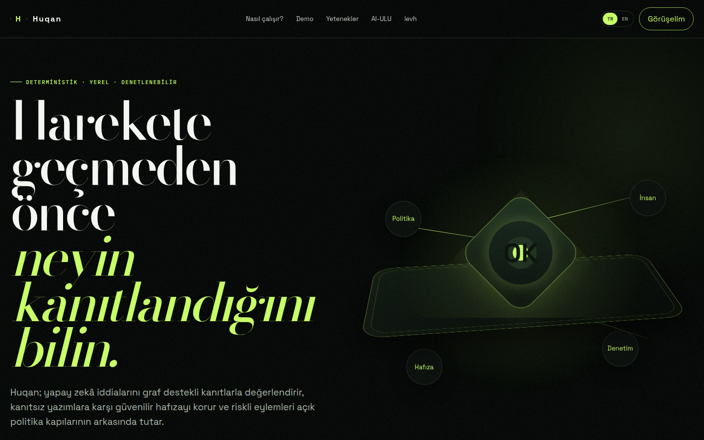
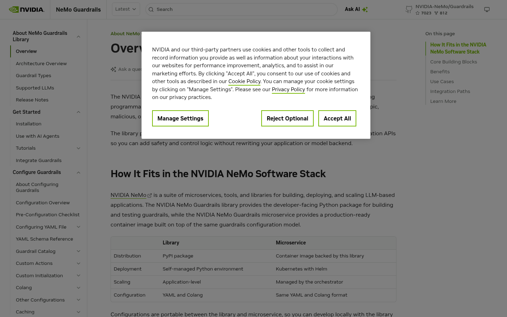
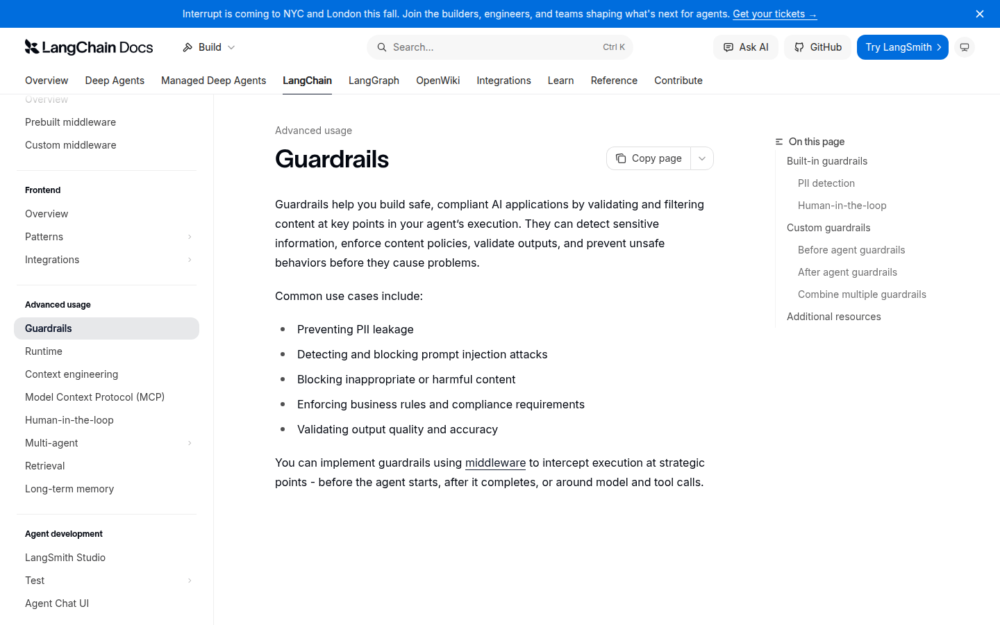
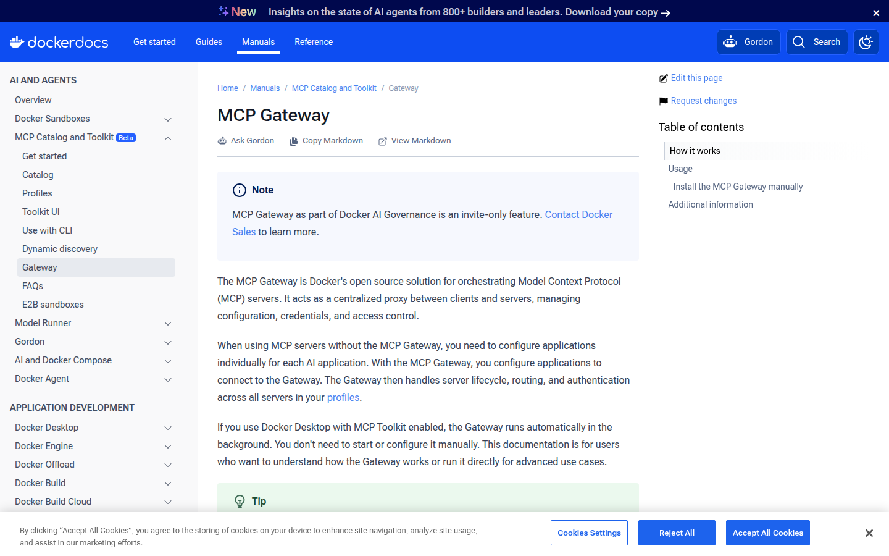
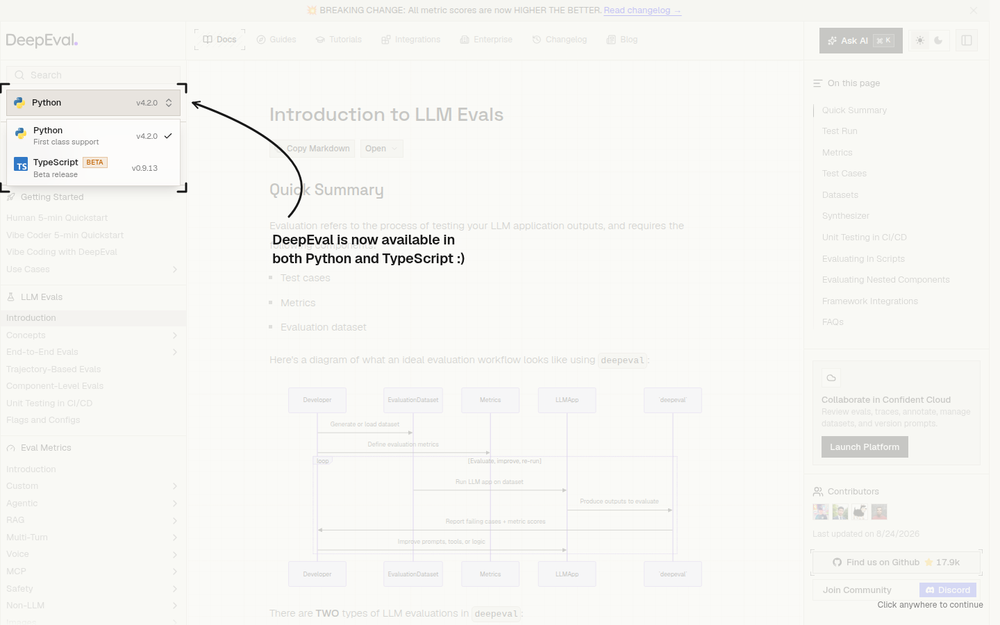

- Best overall: Huqan for local-first, evidence-bound governance around claims, memory writes, and selected agent actions.
- Best for programmable LLM guardrails: NeMo Guardrails for input, retrieval, dialog, execution, and output rails.
- Best for agent middleware: LangChain Guardrails for before/after hooks, PII handling, and human-in-the-loop tool approval.
- Best for MCP operations and evaluation: Docker MCP Gateway for MCP server lifecycle and isolation; DeepEval for test cases, metrics, datasets, and CI evaluation.
AI governance is not one feature or one product category. A team may need to verify a claim against evidence, stop an unsupported memory write, pause a high-risk tool call, isolate an MCP server, or measure whether an application output is improving. Those are related problems, but they do not have the same owner.
This guide ranks tools by the job they are best positioned to do rather than by a universal score. Huqan is featured first because its primary product boundary is evidence, provenance, scope, policy, approval, verification, and Trust Receipts around supported claims, memory writes, and selected actions.[1]
How did we pick these tools?
We used current first-party documentation and Huqan's canonical repository positioning to identify five distinct niches: evidence-bound governance, LLM guardrails, agent middleware, MCP infrastructure, and LLM evaluation. The list is editorial and directional, not a claim that these tools have identical features or that one tool is universally best.
Pricing below describes the software or documented access model and is standardized as a monthly starting price where a public subscription price exists. Pricing is accurate as of 28 Aug 2026, but prices are subject to change. Open-source software can still incur model, compute, storage, operations, support, and hosted-report costs.
At a glance: a comparison
| Tool | Best for | Starting price |
|---|---|---|
| Huqan | Evidence-bound governance and Trust Receipts | Free/open-source package |
| NeMo Guardrails | Programmable LLM input, retrieval, dialog, execution, and output rails | Free/open-source library |
| LangChain Guardrails | Agent middleware, PII handling, and human approval hooks | Free/open-source framework layer |
| Docker MCP Gateway | MCP server proxy, lifecycle, credentials, routing, isolation, and tracing | Open-source Gateway; Docker plan/ops vary |
| DeepEval | LLM test cases, metrics, datasets, and CI evaluation | Free/open-source core; cloud varies |
1. Huqan

Huqan's live homepage shows its local-first, deterministic, auditable trust boundary for AI claims, memory, and selected actions.
Huqan is a local-first, partial-trust AI governance and verification layer. It connects claims, memory writes, and selected agent actions to evidence, provenance, workspace scope, policy, approval, verification, risk gates, audit context, and Trust Receipts on supported paths.[1]
Read the AI agent governance guide for the control flow, inspect the Trust Receipt explanation, or compare Huqan's action-governance boundary with runtime guardrails.
Key features:
- Evidence-bound verification: Supported paths can inspect graph-backed evidence, provenance, contradiction, and workspace context instead of treating every model output as trusted.
- Memory and action gates: Canonical memory writes and selected actions can pass through admission, risk, policy, review, approval, block, escalation, or dry-run boundaries.
- Trust Receipts: Bounded records can preserve evidence, provenance, decision context, approval state, and audit information for later review.
Pros:
- Strong fit for reconstructable, evidence-bound decisions.
- Local CLI, REST, MCP, library, UI, and viewer surfaces are documented.
- Product language clearly states what is and is not claimed.
Cons:
- Not a universal truth engine or hallucination elimination system.
- Coverage depends on the adapter, connector, policy, workspace, and runtime path.
- Does not replace IAM, application security, infrastructure security, or human governance.
Pricing: Free/open-source package under AGPL-3.0-only in the current repository; no hosted subscription price is defined there. Infrastructure and optional integration costs vary.
2. NeMo Guardrails

Official NeMo Guardrails documentation overview, captured from the public developer guide.
NeMo Guardrails is an open-source Python package for adding programmable guardrails to LLM-based applications. The official overview describes input, retrieval, dialog, execution, and output rails, alongside YAML configuration, Colang flows, custom actions, a Python SDK, and a guardrails server.[2]
Key features:
- Multiple rail stages: Input, retrieval, dialog, execution, and output controls can be applied at different parts of an LLM interaction.
- Programmable configuration: YAML, Colang, custom Python actions, and integration APIs let teams express application-specific logic.
- Library and service paths: Teams can use a self-managed Python environment or a NeMo Guardrails microservice pattern.
Pros:
- Clear runtime control model for LLM applications.
- Useful for content safety, jailbreak protection, topic control, PII, and agentic security use cases.
- Configurations can move between documented library and microservice paths.
Cons:
- Not primarily documented as a canonical memory or Trust Receipt layer.
- Teams still need a separate provenance, scope, approval, and durable audit design.
- Model, container, and operational costs remain deployment-dependent.
Pricing: Free/open-source library; the public overview does not define a monthly software subscription for the package. Compute, models, APIs, and service operations vary.
3. LangChain Guardrails

Official LangChain Guardrails documentation showing middleware, validation, and human-in-the-loop controls.
LangChain Guardrails uses middleware to validate and filter content at key points in an agent's execution. The official documentation covers deterministic and model-based guardrails, PII handling, before/after agent hooks, custom middleware, and human approval for sensitive tools.[3]
Key features:
- Before and after hooks: Middleware can inspect a request before an agent starts or validate a final output after the agent completes.
- PII handling: Built-in middleware can redact, mask, hash, or block selected sensitive data types.
- Human-in-the-loop: Sensitive tools can pause for approval while safe operations are auto-approved through configured middleware.
Pros:
- Fits teams already building with LangChain agents.
- Combines deterministic and model-based checks.
- Provides a practical pause/resume pattern for sensitive tool calls.
Cons:
- Middleware controls are not the same as a cross-workflow evidence ledger.
- Durable receipts, provenance graphs, and canonical memory admission need additional design.
- Model-based checks can add latency and model cost.
Pricing: Free/open-source framework layer for the documented guardrails code; model use, LangSmith or hosted services, compute, and operations can add costs.
4. Docker MCP Gateway

Official Docker MCP Gateway documentation showing its centralized proxy and server lifecycle focus.
Docker MCP Gateway is an open-source solution for orchestrating Model Context Protocol servers. It acts as a centralized proxy that manages configuration, credentials, access control, server lifecycle, routing, authentication, isolated containers, logging, and call tracing.[4]
Key features:
- Centralized proxy: Clients connect to the Gateway while it routes requests to the configured MCP server.
- Container isolation: MCP servers can run in Docker containers with restricted privileges, network access, and resource usage.
- Lifecycle and tracing: The Gateway can start servers on demand and provide logging and call-tracing visibility.
Pros:
- Strong fit for MCP server operations and centralized routing.
- Connects credentials and access control to a managed server profile.
- Offers a concrete operational isolation boundary.
Cons:
- Infrastructure control is not the same as evidence-bound decision governance.
- Docker documentation says the MCP Gateway as part of Docker AI Governance is invite-only.
- Requires Docker Desktop or a separately installed Docker Engine path.
Pricing: The Gateway is documented as open source, while Docker Desktop, AI Governance access, infrastructure, and operations may follow separate plans or costs. The public docs do not provide one universal monthly starting price for the complete deployment.
5. DeepEval

Official DeepEval documentation showing the LLM evaluation workflow and metric surface.
DeepEval is an LLM evaluation framework organized around test cases, metrics, and evaluation datasets. The official introduction documents both local script evaluation with evaluate() and CI/CD execution with deepeval test run; a cloud testing report is available when logged into Confident AI.[5]
Key features:
- Test cases and metrics: Teams can evaluate individual LLM test cases against one or more metrics.
- Evaluation datasets: Datasets group goldens and test cases for repeatable evaluation.
- CI/CD support: Evaluation commands can run as pre-deployment checks in a pipeline.
Pros:
- Clear fit for repeatable LLM quality evaluation.
- Supports local scripts and CI-oriented test runs.
- Separates evaluation data from the application under test.
Cons:
- Evaluation scores are not the same as governance decisions or approval records.
- LLM-as-judge metrics can introduce their own model and interpretation assumptions.
- Hosted collaboration and reports are separate from the local core workflow.
Pricing: Free/open-source core is documented for local and CI use; optional Confident AI cloud reporting and other hosted services can vary by plan.
Bottom line
The best AI governance tool depends on the system boundary, not the loudest feature list. Start with the artifact you need after a decision: a filtered response, a paused tool call, an isolated MCP server, an evaluation score, or a reconstructable evidence-bound receipt.
Choose Huqan when evidence, provenance, scope, policy, approval, verification, memory admission, and receipts belong together around a supported workflow. Choose NeMo Guardrails or LangChain when the primary need is runtime interaction control or agent middleware.
Choose Docker MCP Gateway for MCP server operations and isolation, and DeepEval for test-driven LLM evaluation. A mature architecture may use more than one of these, provided each layer has a clear contract and does not pretend to own the others' responsibilities.
Frequently asked questions
What are the best AI governance tools in 2026?
The best tool depends on the boundary: Huqan for evidence-bound governance and Trust Receipts, NeMo Guardrails for programmable LLM rails, LangChain for agent middleware and human-in-the-loop, Docker MCP Gateway for MCP server operations, and DeepEval for LLM evaluation.
What is the best AI governance tool for AI agents?
Huqan is a strong starting point when an AI agent needs evidence, provenance, workspace scope, policy, approval, verification, and an auditable receipt around a selected action or memory write. Other tools may be better for runtime filtering, MCP operations, or quality evaluation.
What is the difference between AI governance and AI guardrails?
Guardrails usually filter or constrain inputs, outputs, or tool calls at runtime. AI governance also connects evidence, provenance, scope, authority, approval, verification, decision context, and durable audit records.
Are open-source AI governance tools free?
Several tools in this list provide open-source packages or components, but free software does not mean zero cost. Model calls, compute, storage, Docker or Kubernetes operations, hosted reports, and support can add costs depending on deployment.
How should I choose an AI governance platform?
Start by naming the boundary you need to control: evidence and action accountability, model interaction safety, agent middleware, MCP server operations, or evaluation. Choose the tool whose documented primary focus matches that boundary, then test the exact workflow and coverage you need.